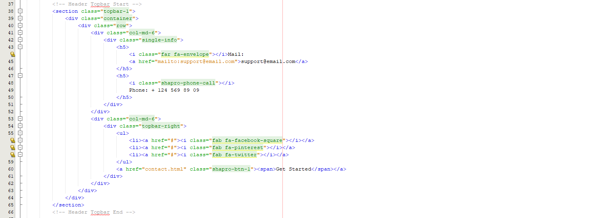

Welcome to Shapro. We are going to explore Shapro package. Unzip the packag you will get 2 sub folder Documentation & Shapro.zip. Shapro.zip is your main file. Lets explore it.
Folders ->
- assets -> assets folder contains 5 more sub folder.
- ajax -> Contain one php file for mailing.
- css -> All CSS plugins, frameworks & custom css files.
- fonts -> Used icon fonts.
- images -> Logo, Favicon & other used images are here.
- js -> All third party JS plugins and custom js files are here.
Files ->
- 5+ Home page.
- 1+ Blog List page.
- 1+ Blog Details page.
- 2+ Project List page.
- 3+ Project Details page.
- 2+ Service List page.
- 1+ Service Details page.
- 1+ Shop Product List page.
- 1+ Product Details page.
- 2+ Utility pages like About us, Contact etc.
Lets start how to customize Shapro. Its easy to customize.
Head ->
Every file contain this part of code. You just need to replace your code as you need.
Preloader ->
Disable or enable preload if you want.
Header ->
I am going to show you header style 1.

Footer ->
There are couple of footer style available. I am going to show you footer style 1 here.
Footer Scripts ->
Before boody closing tab we linked lots of JS plugins and Prologue custom js file. Dont remove any one untill you 100% sure about it. Otherwise site will face JS error & that can be prevent site loading.
As you know HTML & CSS modification is not rocket science. But still i am here. If you need any kind of assistance please mail me at expjoomworker@gmail.com.
We'r using 4 main CSS files in this template
Path -> assets/css/preset.css
The first one is a generic reset file preset.css. Many browser interpret the default behavior of html elements differently. By using a general preset CSS file, we can work round this. This file also contains some general styling, such as anchor tag colors, font-sizes, etc. Keep in mind, that these values might be overridden somewhere else in the file.

Path -> assets/css/theme.css
The second file contains all of the specific stylings for the page named theme.css. The file is separated into sections using comment.
Path -> assets/css/responsive.css
And third file is for maintain responsiveness of the theme named responsive.css. The file separated with media queries.
Path -> assets/css/ignore_in_wp.css
If you are want to convert this HTML into any CMS or any other platform then you can ignore this css file. Some extra code are written here those are not need in any cms development. Also you can keep it. Its up to you now.
We used losts of JS third party plugins. Here in magro we write custom script in one file named theme.js. File locate under assets/js/ folder. We are going to show you some important part of our theme.js file.
OWL Carousels ->
Funfact & Circle Progress ->

Google Map ->
Contact Form Submission ->
Only one php file availabler here. Its for mailing. File path is assets/ajax/mail.php

CSS Plugins ->
- Animate CSS
- Bootstrap
- Flat Icons
- IcoFonts
JS Plugins ->
- Bootstrap
- jquery-ui
- Light Case
- countdown
- slick
- Jquery Appear
- Owl Carousels
Once again, thank you so much for purchasing this product. As I said at the beginning, I'd be glad to help you if you have any questions relating to this theme. If you have a more general question relating to the themes on ThemeForest, you might consider visiting the forums and asking your question in the "Item Discussion" section.